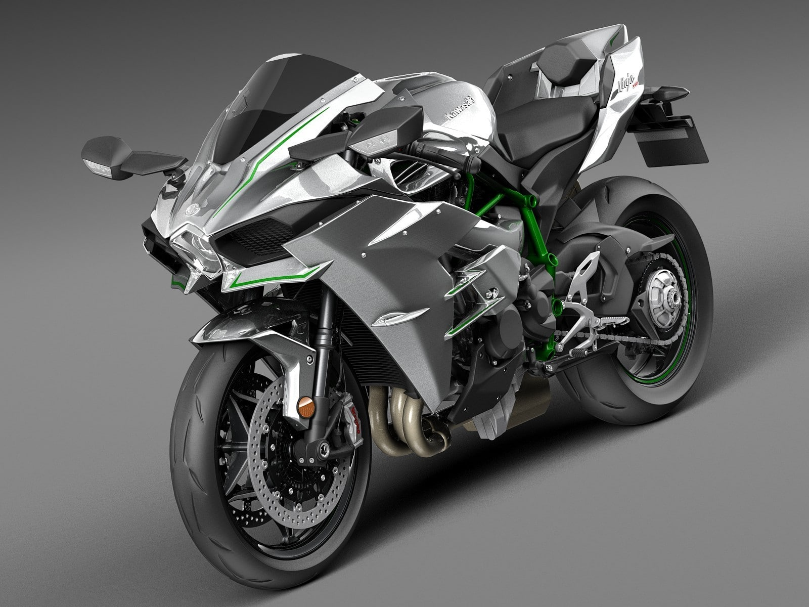

Kawasaki Ninja H2R
СОЗДАН ЗА ГРАНЬЮ ВОЗМОЖНОГО
Обзор
Разработка мотоцикла Ninja H2®R выходит за рамки любого другого мотоцикла Kawasaki. Появившаяся на свет благодаря беспрецедентному сотрудничеству между несколькими подразделениями компании Kawasaki Heavy Industries, Ltd. (KHI), модель с ограниченным объемом производства с наддувом представляет собой безудержную вершину машиностроения Kawasaki, обладающую поразительным ускорением и умопомрачительной максимальной скоростью, подходящей только для трека.